Tools I use for data cleaning
Pick your guns!
- Open Refine (formerly called Google Refine) (open)
- Ms Excel (buy)
- LibreOffice (open)
- R (open)
- Python (open)
- DataCleaner (not sure)
- Cartodb to clean up GeoData (open to an extent)
- QGIS for GeoData (open)
Lets start with simple cleaning tools, and end with some of the more advanced techniques. Most basic to use are possibly programs like Excel, or - in my opinion more attractive - its open source counterparts, including Libre Office, OpenOffice or even Google docs.
Excel/LibreOffice/OpenOffice
Below a list of functions to help you to clean your data, or to redefine it.
- Filter: On Data tab, in the sort & filter group, use advanced.
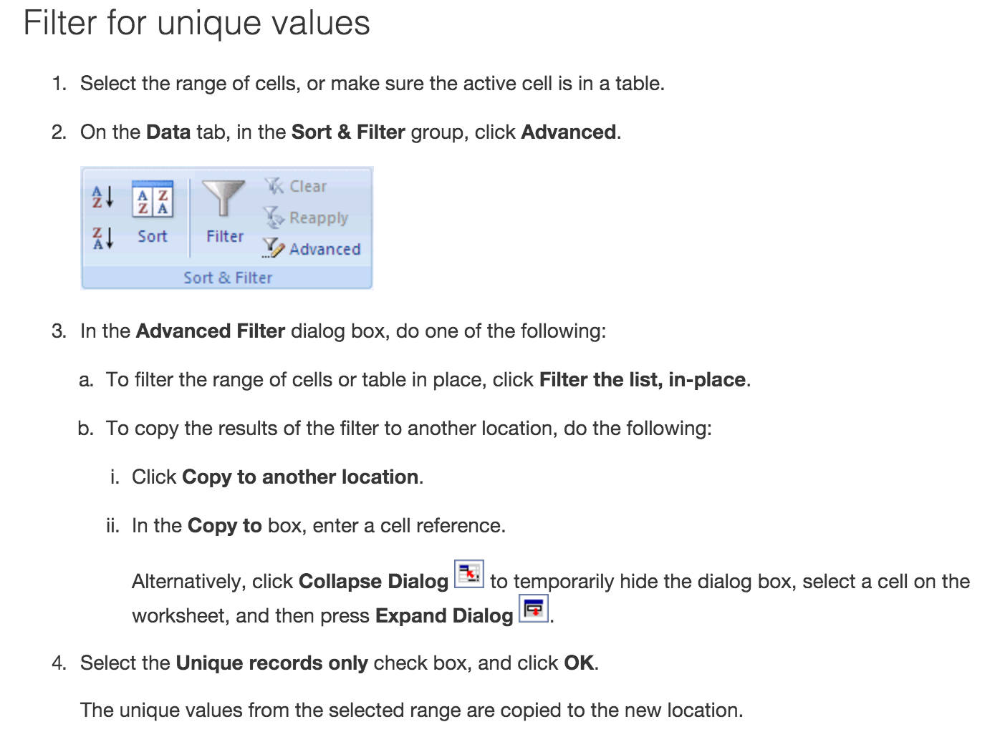
- Removal of duplicate rows (make a backup):
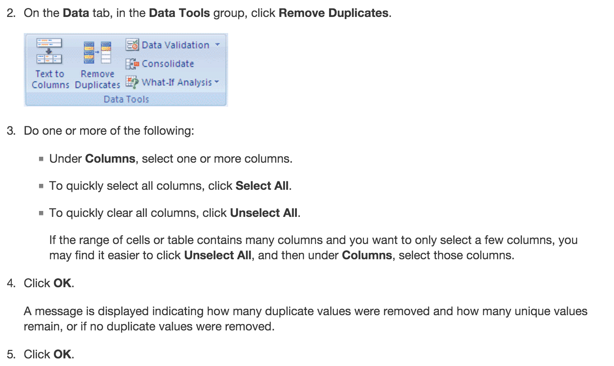
Note: You cannot remove duplicate values from the data
- Conditional formatting for duplicate values:

- General conditional formatting of data (for instance, if you look for data that contain information that you are particularly interested in):
click format -> conditional formatting -> click + to add a new rule, and go wild on colouring cells. Then use filter to sort by colors.
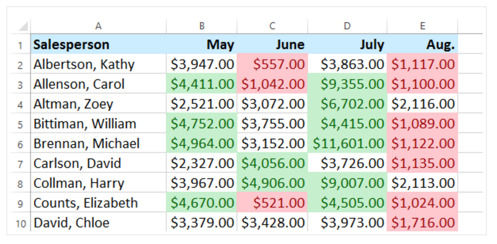
And lastly a world on pivot tables. Great if you want to get a quick understanding of outliers.
Google.Sheets
- Sometimes you have two datasets that you want to merge. For that you need one common row, which you intent to match. Here is a case to understand the VLOOKUP function: You have sheet1 and sheet2. Sheet1 contains data for the complete set of data. Sheet2 has a column with the index data (to be found somewhere in sheet1). Now you want to fill in the data from sheet1. Use VLOOKUP with the following syntax: =VLOOKUP(search_key, range, index, [is_sorted])
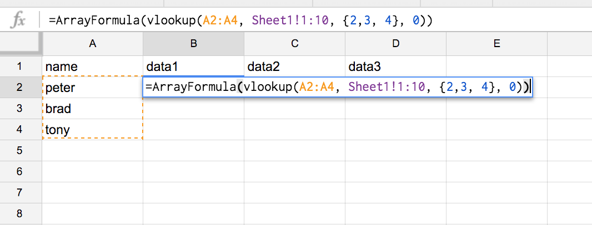
=ArrayFormula(vlookup(A2:A4, Sheet1!1:10, {2,3, 4}, 0))
Here you have your data to be filled in. Find a complete overview on VLOOKUP on this link for Google Sheets. Here is an additional example with more data involved.
Matching DataRows in Excel:
(More resources on cleaning data in fun(ny) programs such as Excel, follow this link)
Here is another tutorial, which I found quite helpful, if you have the dreadful task to use Excel for your everyday data work.
But who wants to go with Excel, if we have awesome open sources statistics programs such as R, Open Refine, and Python.
You got to love R:
R is a programming language and software environment for statistical computing and graphics supported by the R Foundation for Statistical Computing, and you simple got to love it. Lets go thought one simple example how to clean data. Imagine you have been given data with currency values and separators in a CSV file and you want to use R for the statistical analysis. Before you can do any magic, the currency values will hinder you to produce greatness. Here is how you clean it up.
Ok, so first you need your data (in my case CSV data) to be read into R (or in my case into R-Studio).
download data here, and download R-studio here:
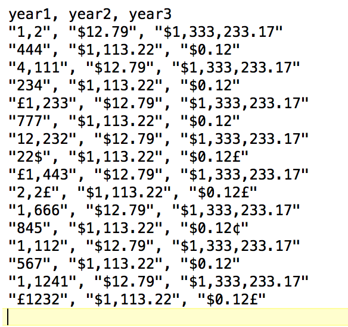 "Unclean" data with characters such as ", ", "£", or "$", which you want to remove.
How to remove the characters in the cvs data?
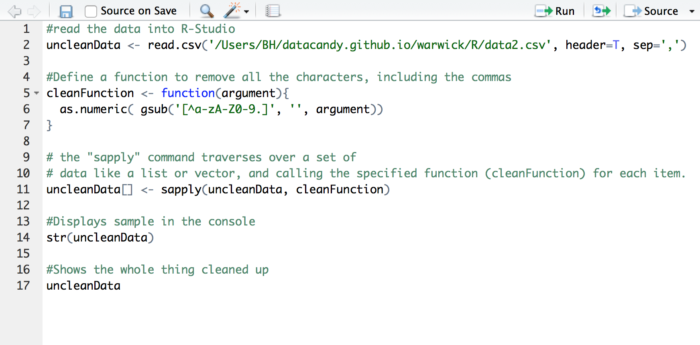 The #commands walk you through the example. Want more? One of the great resources I used is the "Introduction to data cleaning with R" from Statistics Netherland.
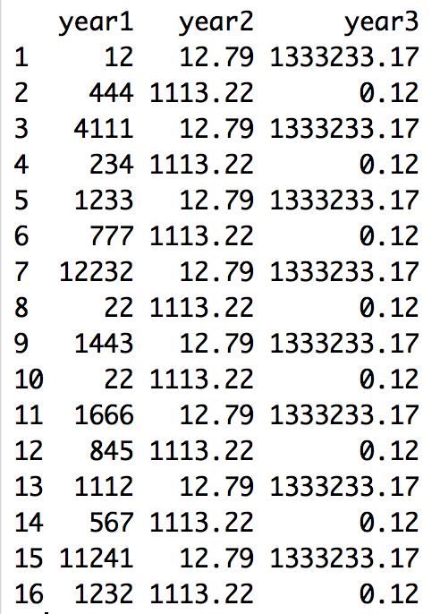
Download the R script here for this little tutorial.
Now you are good to go to do some plotting, statistics analysis etc. Of course, the data is not checked whether it is "statistically" clean. Hereby you would try to find and remove outliers that may skew your data.
Open Refine
Great tool, go and download it HERE!
Lets use an example dataset, and apply some changes. I help myself here with another example's case.
The data: the data is on the spending of over £25,000 by the University Hospitals of Leicester, and published by university Hospitals of Leicester NHS Trust. Download the data here. There is much you can do with Open Refine. We will look at a few interesting things only.
Group the data via "text facets"
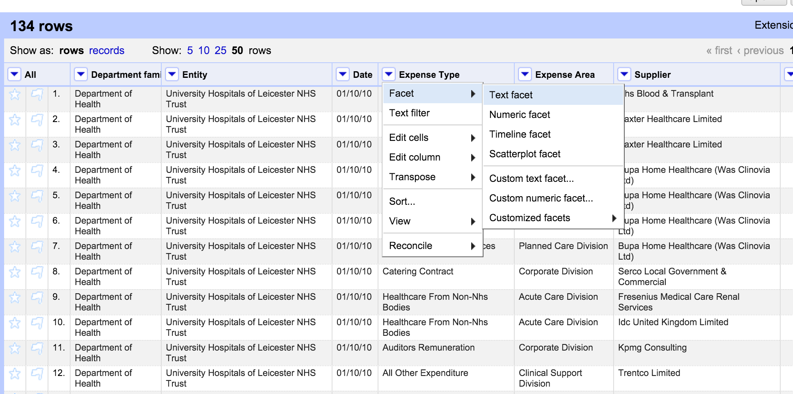 Load the data in and click on column header -> facet -> text facet. Create categories for cleaning purposes: Faceting can help you to remove or select categories of special interest. As shown in the example, you can group them easily by creating facet, either via text, or in the context of quality (numerical facet) or via a timeline facet.
Timeline facet
Use the timeline facet by transforming the "data" column into dates. Click on it and select "edit cells", --> common transforms --> to date.
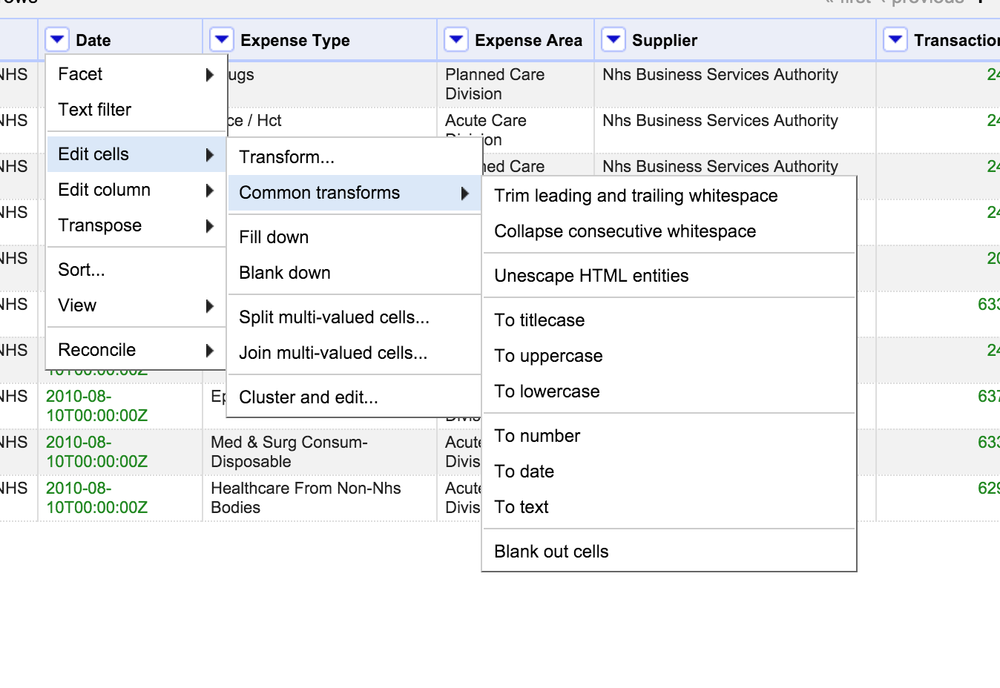
Now your numbers became dates in the dates column. Click now on the column header again and select face and timeline facet. What you get is a neat selection with a slider on the left side, to select or deselect time intervals.
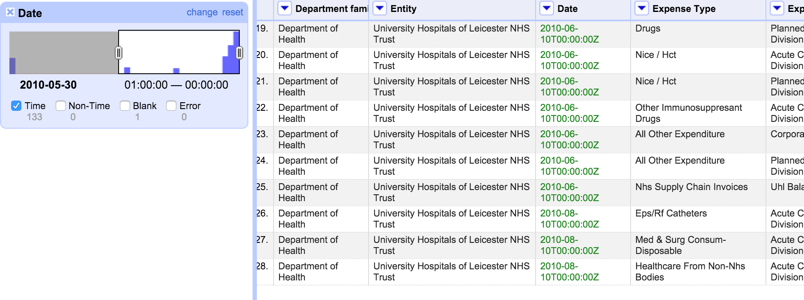
Reconciling Categories with Open Refine
Possibly one of the most important aspects for my work with Refine. You use it when you have "dirty data", whereby categories that should be one run under two or more categories. The problem is obviously that the cells have errors in spellings or have other variations or expression that mean the same. Refines algorithms can help. Here is what you do: Lets apply the text facet on out data in the column entity again. If we do this, we see that what actually should run under one category, now runs under several clusters. This is due to spelling errors in the data.
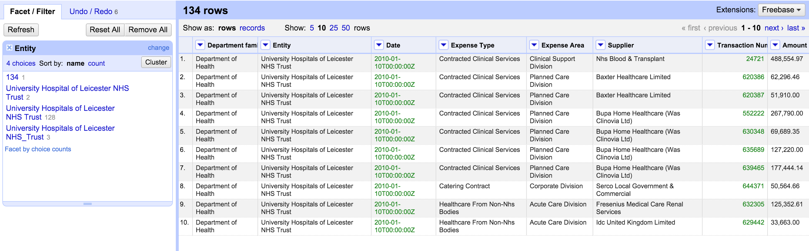
It's one and the same organisation. To correct this, we reconcile categories. Refine can help you to automatically find the categories that belong together – a feature it calls “Clustering”. Click on "cluster" in the facet menu to your right. Select "nearest neighbour" or see the selection that is offered to you right away. To finish up, click on the "merge" checkboxes, and click "Merge selected and Re-cluster".
Try and reconsolidate until there is only one organisation name "University Hospitals of Leicester NHS Trust".
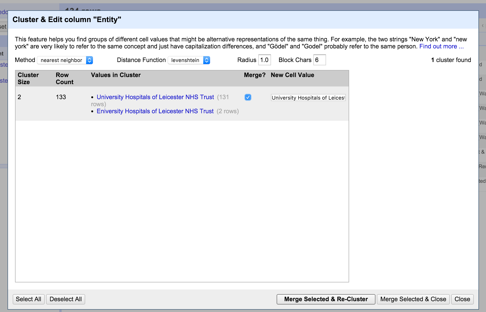
Google refine is great to use, even if you have large data. If you need to allocate more space for your big data, you can do so. It is explained that if your project is big enough to need more than the default amount of memory, you may want to consider turning off "detect types automatically" on import as well (it's convenient, but less efficient than explicitly converting any columns that you need as a data type other than the default "string" type).
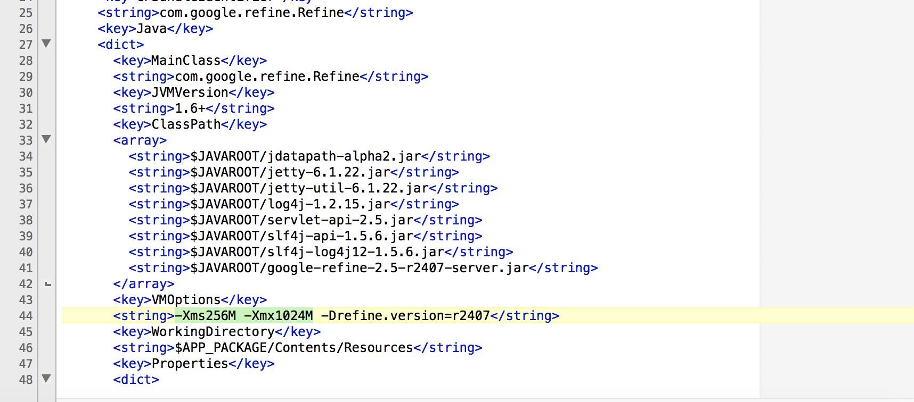 expand data on Mac, instructions here
If you got now hungry on cleaning your data, I also encourage you to explore some more tutorials on Open Refine:
- Video on linking and extending datasets with various web services in OpenRefine Lastly, also check out the extensions for Open Refine, there are some nifty plugins.